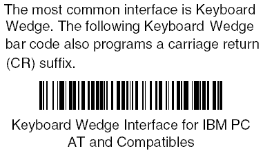
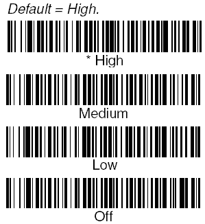
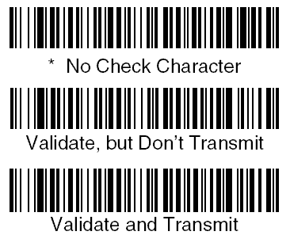
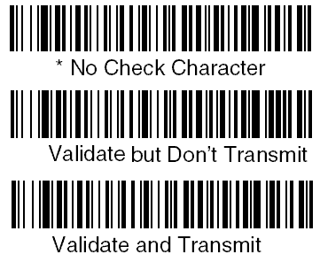
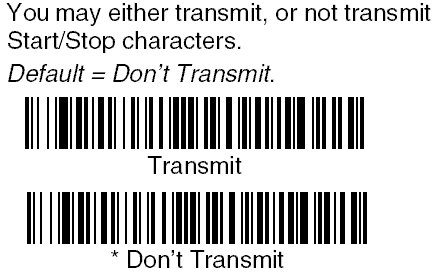
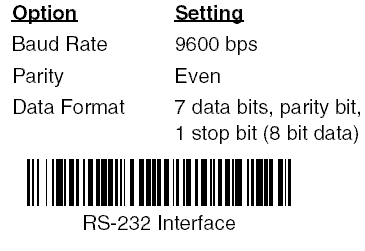

Adjusting Bar Code Reader IT3800
This procedure describes how to modify the bar code reader to the Beckman Coulter default settings.
Adjust the bar code reader setup (PC or AU) when the reader does not scan correctly when first installed.
Note:
- The PC keyboard [Caps Lock] key inverts the upper and lower case of the scanned characters. With the [caps lock] on, the scanned upper case letters are sent to the PC as lower case letters, and lower case as upper case. This inversion can cause problems when reading bar code labels on tubes that contain case-sensitive information.
- The characters scanned by the bar code reader can be viewed by opening the Notepad program and scanning a bar code ().
- For more information, refer to the multi-language manuals for Bar Code Reader IT3800 located at the Hand Held Products website hhp.com. Search for IT3800.
Caution: Changing some aspects of the programming can affect the ability of the bar code reader to read other bar codes. Confirm that all accessory products scan correctly (substrate, reagents, calibrator cards) after changing the programming for any bar code reader feature.
-
Scan the bar code in the table to adjust the scanner to the setting.
Setting Description Bar code Beckman Coulter Default Sets the bar code reader to the Beckman Coulter default settings for use with the PC console and keyboard. Note: This default setup code can also be used on the hand held substrate bottle scanner mounted onto the DxI instrument.
Scan Rate Reduction Sets the bar code reader scan rate from 270 scans per second to 135 scans per second, reducing the scanner power consumption and possibly reducing the incidence of lockups. Note: The reader beeps twice when the rate is changed and beeps once when scanning the bar code after the change is accepted.
Common Default Sets the bar code reader to the most common default setting for use with a PC console and keyboard. Note: This setting changes the output format of the reader. Do not be use this setting on the substrate bottle handheld bar code reader mounted on the DxI instrument. That scanner is configured for serial output (refer to Serial Output).
Carriage Return Enables the automatic carriage return after each successful scan.
Beep Enables the beep tone after each successful scan. 
Code 39 Check Digit Enables or disables the code 39 check digit. Note: If the check digit is not enabled and there is a check digit present, then the check digit is sent as an extra letter at the end of the bar code. The check digit must be enabled if it is present, so that the "disable send check digit" function can suppress transmission of the check digit.
Codabar Check Digit Enables or disables the Codabar check digit and sends or not sends the check digit. Note: When Check Character is set to "validate, but don't transmit", the unit only reads Codabar codes printed with a check character, but does not transmit the check character with the scanned data.
Start stop characters Enables or disables start stop character transmission. 
Serial output Configures the bar code reader for serial output. Note: Serial output is used for the DxI instrument connection.